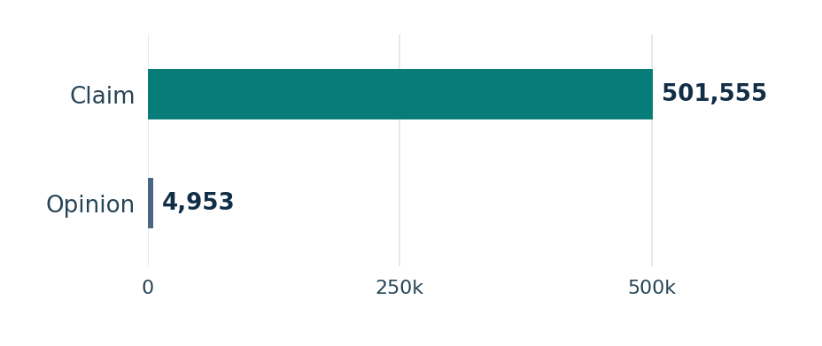

Programming
Python, SQL
Analytics portfolio
I’m Keerthana Suresh, a mathematics postgraduate based in Coimbatore, Tamil Nadu. I use Excel, SQL, Python, and Power BI to explore data, test ideas, and explain what the results mean for a business.
My projects use Power BI to analyze retail orders, machine learning to prioritize video claims for review, and SQL and Python to flag monthly revenue changes.
About me
With an M.Sc. and B.Sc. in Mathematics from Bishop Heber College, I bring structured problem-solving, quantitative reasoning, and careful validation to analytics work.
I earned the Google Advanced Data Analytics Professional Certificate and completed the Analytics and AI program at iHub DivyaSampark, IIT Roorkee. I work in English (fluent) and Tamil (native).
My professional background spans editorial operations and technical support, where accuracy, workflow monitoring, quality checks, timely follow-up, and clear stakeholder coordination matter every day. I’m now focused on applying those strengths to solve business problems with data.
Skills
I developed these skills through analytics projects, editorial operations, and technical support.
Python, SQL
Pandas, NumPy, Excel, Google Sheets
Power BI, Matplotlib, Seaborn
Hypothesis Testing, Regression, A/B Testing, Probability
Classification, Regression, Model Evaluation, Scikit-learn
SQLite
Python Scripting, SQL Pipelines, Rule-based Insight Generation
Time management, stakeholder collaboration, adaptability, and critical thinking
Featured projects
Explore the code, methods, and results behind each project.
01 / Analytics automation
CompletedA multi-stage analytics pipeline that generates synthetic reseller data, calculates monthly revenue metrics, identifies significant month-over-month changes, and prepares stakeholder-message drafts for human review.
02 / Machine learning
CompletedAnalyzed video data to investigate patterns, conduct statistical testing, engineer features, and develop a classification workflow to distinguish claims from opinions.

Business intelligence
Analyzed 99,441 Brazilian marketplace orders to see where sales were concentrated, which customers returned and how delivery delays related to buyer ratings.
Olist data and derived results carry the CC BY-NC-SA 4.0 license.
Professional experience
Straive
Managed 300–600 active manuscripts with Excel PivotTables, XLOOKUP, and charts. Prioritized overdue submissions with authors, reviewers, editors, and peer-review leads. Maintained a zero-error audit record and trained 6–10 employees on workflows and quality standards.
24/7.ai
Resolved technical and account-related customer issues for a US mobility client, documented cases, investigated root causes, and escalated complex concerns while meeting quality and turnaround expectations.
Straive
Prepared Excel status reports, validated manuscript records, and tracked overdue items for authors, reviewers, and editors.
Education & certifications
Bishop Heber College, Tiruchirappalli, Tamil Nadu
Bishop Heber College, Tiruchirappalli, Tamil Nadu
Google, Coursera · View Credly badge
iHub DivyaSampark, IIT Roorkee
Let’s connect
I’m open to entry-level Data Analyst, Associate Data Analyst, Business Analyst, and Data Science opportunities.